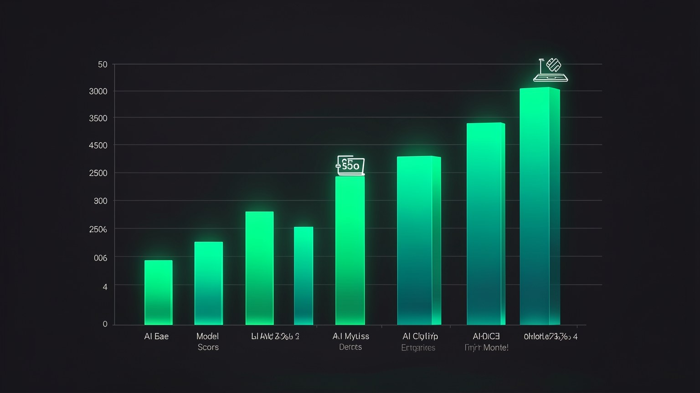

⚖️ La compensación: privacidad, rendimiento y precio
Nada es realmente gratis: siempre cambias una cosa por otra. Lo local te da privacidad y costo cero, pero pagas con rendimiento bruto. En este módulo aprendes a LEER ese trade-off con ojo crítico: qué gana cada eje, qué pierde y por qué «1 año detrás de la frontera» ya es más que suficiente para la mayor parte de tu trabajo.
🔐 Privacidad: lo que obtienes
Empecemos por el aspecto en el que lo local gana por goleada: privacidad. Cuando el modelo funciona en tu máquina, el texto que escribes, los archivos que abres y las respuestas que recibes nunca salen de ahí. No hay servidores de terceros de por medio, no hay registros guardados por una empresa ni políticas de retención que puedan cambiar mañana. El dato es tuyo y sigue siendo tuyo.
🛡️ Los tres «nunca» del entorno local
- •El dato nunca circula por internet — está entre el teclado y el disco.
- •Ninguna empresa nunca guarda lo que preguntas para entrenar otro modelo.
- •El acceso nunca depende de un inicio de sesión que se puede revocar.
¿Nuevo por aquí? "Trade-off" es cuando mejoras una cosa a costa de otra: no hay almuerzo gratis. Aquí, el trade-off central es que ganas privacidad y ahorras costos, a cambio de renunciar a un poco de rendimiento bruto. Todo el módulo trata de medir este intercambio con honestidad.
Conceptos clave
Cada elección mejora un eje y exige algo a cambio en otro; el secreto está en elegir a propósito.
El dato no sale porque NO hay una vía de salida, no porque alguien lo prometa.
Ningún registro queda en un servidor que no controlas.
Nadie te corta el acceso a tu propio modelo.
⚡ Rendimiento: la frontera de "hace 1 año"
Ahora, el eje en el que lo local pierde —pero pierde menos de lo que imaginas—. Los mejores modelos abiertos que se ejecutan en tu laptop hoy están, en promedio, a cerca de un año de la frontera (los modelos de frontera en la nube). La buena noticia: los modelos de frontera actuales son increíblemente buenos, así que «uno de hace un año» sigue siendo excelente para la gran mayoría de las tareas del día a día.
Fíjate: el modelo local de hoy se mantiene en el nivel donde la frontera estaba hace un año. Como el modelo de frontera de hace un año ya era excelente, el modelo local de hoy resuelve casi todo y la brecha se mantiene constante, no se dispara.
✓ Dónde basta con "hace 1 año"
- ✓Resumir, reescribir, traducir, responder correos.
- ✓Escribir borradores de código y explicar fragmentos.
- ✓Conversar sobre documentos privados.
- ✓Tareas repetitivas que se ejecutan todo el día.
✗ Dónde la frontera aún gana
- ✗Problemas de razonamiento muy largos y difíciles.
- ✗Tareas de programación grandes y complejas (consulta los benchmarks).
- ✗Cuando ese último 5% de calidad cambia el resultado.
- ✗Cuando la velocidad de la nube importa más que la privacidad.
Conceptos clave
Los modelos de vanguardia del momento, casi siempre funcionando en la nube.
El retraso típico del mejor modelo abierto con respecto a la frontera.
Para la mayoría de las tareas, «1 año atrás» ya es más que suficiente.
Lo abierto avanza junto con la frontera; la distancia no crece.
💰 Precio: $0 por uso, para siempre
El tercer eje: precio. En la nube pagas por token: cada pregunta y cada respuesta tienen un medidor en marcha. Localmente, después de descargar el modelo una sola vez, cada uso es gratuito. No hay factura a fin de mes ni un «hoy gastaste X dólares». El único costo es el hardware que ya tienes y un poco de energía.
📊 Costo: nube vs. local
- •Nube: costo VARIABLE que aumenta con el uso (OPEX): cuanto más lo usas, más pagas.
- •Local: costo FIJO ya pagado (la computadora) + ~$0 por llamada (CAPEX).
- •Como cada llamada cuesta $0, puedes dejar agentes 24/7 sin miedo a la factura: ese será el tema del 1.6.
💡 Consejo práctico
Como explorar es gratis, descarga, prueba y elimina modelos a tu gusto. El «precio» de equivocarte es cero. Trata cada descarga como un experimento barato, no como un compromiso.
Conceptos clave
Uso gratuito después de la descarga — sin medidor.
Invierte una vez en el hardware, en lugar de pagar por el uso recurrente.
Costo predecible: ya sabes que es cero.
El único «uso» pagado es la electricidad de tu máquina.
📊 Los benchmarks: leer con ojo crítico
Aquí la compensación se convierte en número. El gráfico de abajo es el SWE-bench — una prueba para resolver problemas reales de programación. La puntuación es el porcentaje de tareas que el modelo resuelve por su cuenta. Cuanto más alta, mejor. Vale la pena leerlo con calma: la frontera avanza, pero el modelo que «funciona en la laptop» se acerca lo suficiente como para impresionar.
¿Nuevo por aquí? "Benchmark" es una prueba estandarizada para comparar modelos con la misma vara. "SWE-bench" mide la capacidad de resolver bugs o tareas reales de software. El número es el porcentaje de tareas resueltas; no lo confundas con una "nota de examen": es difícil, e incluso la frontera del rendimiento no llega al 90%.

🔢 Los números reales (SWE-bench, del video)
La lectura crítica: o Qwen 3.6 27B, marcado como "runs on a laptop", hace 74.0 — en contra 88.6 del Opus 4.8 en la nube. Son ~14.6 puntos de diferencia frente a un modelo que cabe en tu computadora, funciona offline y cuesta $0 por uso. Esa es exactamente la idea de "1 año atrás": lo bastante cercano para casi todo.
Conceptos clave
Prueba para resolver tareas reales de software; % de tareas resueltas.
Frontera (Opus 4.8) vs local (Qwen 3.6 27B): ~14.6 puntos.
Qwen 74.0 cabe en tu máquina: casi la mitad de la lista.
14 puntos en el papel rara vez se convierten en 14 puntos en TU trabajo.
🐢 Tan rápido como tu máquina
Hay un cuarto eje escondido en el «rendimiento»: velocidad. En la nube alquilas GPU gigantes, así que la respuesta es rápida sin importar qué computadora tengas. Localmente, la velocidad depende por completo de la tu hardware — el chip, la memoria y el tamaño del modelo. Un modelo más grande en una máquina modesta responderá despacio; el mismo modelo en un chip potente vuela.
El chip marca el ritmo
Un chip moderno (p. ej., Apple M con bastante memoria unificada) genera tokens mucho más rápido.
Modelo más grande = más lento
Más parámetros pesan más; un modelo más pequeño responde más rápido en la misma máquina.
La elección es tuya
Equilibras: un modelo más pequeño y rápido para el día a día, y uno más grande y capaz para las tareas pesadas.
Consejo práctico: la velocidad local no es fija — se puede ajustar. Si un modelo va lento, cambia a uno más pequeño o más cuantizado (lo veremos en la Trilha 2). «Lento» casi siempre quiere decir «un modelo demasiado grande para ese hardware», no «lo local es malo».
Conceptos clave
La rapidez del entorno local depende de TU chip y memoria, no de un servidor.
Un modelo más grande responde más despacio en la misma máquina.
En los chips Apple M, la RAM y la GPU comparten memoria; eso ayuda mucho.
Cambiar de modelo cambia la velocidad: «lento» tiene solución.
🧩 Dividir el trabajo en porcentajes
La conclusión práctica del trade-off: tú no elige un lado. Divides el trabajo. Imagina que el 100% de tus tareas con IA se reparte en partes. Una parte exige privacidad absoluta: usa el modelo local. Otra exige la mejor respuesta posible: usa un modelo de frontera. Otra solo necesita ser rápida y barata: usa el modelo local de nuevo. Cada parte tiene la herramienta ideal, y el secreto es dirigir conscientemente.
La barra completa y tu trabajo. La mayor parte se realiza localmente (privacidad, costo, día a día); la frontera de corte solo entra cuando ese último 5% de calidad cambia el resultado. Planificar cómo distribuir esas partes es lo que Hermes hace con los tres modos.
🧭 Puente al siguiente módulo
Esta división en porcentajes no se queda en la teoría. En el módulo 1.6 se convierte en los tres modos concretos de Hermes: Vault (todo local), Connected (punto medio) y Cloud (calidad máxima). Aprenderás cuándo usar cada uno.
En la Ruta 3, configuras en la práctica el flujo que alterna entre ellos según la sensibilidad de la tarea.
Conceptos clave
Cada parte del trabajo requiere la herramienta ideal; no elijas un solo lado.
Enviar cada tarea al lugar correcto, a propósito.
La nube entra solo cuando ese último 5% de calidad pesa.
Vault, Connected y Cloud — el tema del módulo 1.6.
Autocomprobación (opcional): en el SWE-bench del video, ¿cuál es la interpretación honesta de Qwen 3.6 27B "runs on a laptop"?
🎯 Resumen del módulo
Siguiente módulo:
1.6 — Los tres modos: Vault, Connected y Cloud